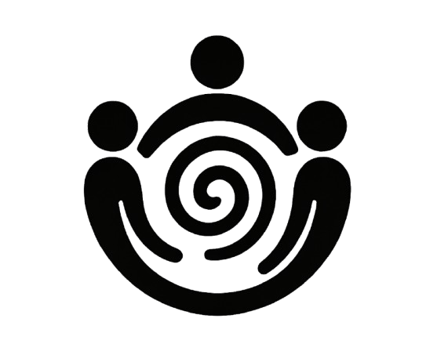

FND
Care guide
A community knowledge base with practical tools that have helped others living with FND, along with lived-experience insights, caring messages, and links to professional and community support.
Created by Irene Roura Garcia and Co
Self-Care Tools
Practical tools for wellbeing
Techniques that have helped other people living with FND and may help you too
Gentle reminder: We are all different. What works for one person might not work for another. That is why I encourage you to explore and choose the techniques that resonate with you and that you find helpful. Always listen to your body and do what feels right for you. Your journey is unique, and so is your toolkit.
FND Care Guide Book
Created with care, clarity, and intention, this guide is a compassionate, practical handbook designed to share with you what has helped other people living with FND manage their symptoms, feel more in control, and improve their wellbeing — and what might help you, too. It has been shaped by the insights and voices of the FND community.


Lived Experience Knowledge Base
Quotes from people with lived experience of FND
Reflections about helpful practical tools
I use box breathing and conscious, controlled yoga breath work. They help to slow down my breathing, regulate my nervous system, release stress and bring me to a place of peace and calm.
Box breathing—use most days to calm the mind, shift the nervous system from fight/flight back to a state of calm, manage pain surges.
If I feel a functional seizure coming, focusing on my breath, deep breath in, even longer breath out, can help me get more focused on my body. Sometimes this will stop the seizures from continuing and sometimes it gives me some more time to get to a safe space or sit down.
After a few minutes of diaphragmatic breathing I can feel calm and in control. Whenever I am feeling big emotions I use this type of breathing to allow myself to feel the emotion in a safe and controlled way, rather than let my emotions take over.
Brings clarity when brain fog is too much.
I do coherent breathing for 10 minutes a day. I also use 4-7-8 breathing during the day to help balance my nervous system.
This has been really helpful when extremely stressed, anxious or feeling lost due to memory relapses.
I use the touch sense. I carry around a token item with me, usually in my pocket, always the same item. When I am struggling due to triggers, I take the item in my hand and guide my fingers across it. Feeling every lump, bump, scratch and imperfection.
Personally, what helps me the most is music. It makes me forget my symptoms at the time and focus on the music, which makes me feel very relaxed when I need calm moments.
Touch therapy - place paralysed feet on various surfaces to stimulate feeling. Grass, carpet, tiled floor, soft towel etc. After repeated exposure I began to receive some sensory feedback and regain some sensations in my feet which had previously been paralysed for 3 years.
I find it helpful to look around at nature and observe all the differences there are in each thing, such as each tree, each leaf, each blade of grass. No two are ever the same and by doing this it helps me to stop comparing myself to others.
Touching moss, leaves or the water of the river.
I find pacing myself each day helps to ease the pain and exhaustion my body feels which leads to different symptoms to flare more. It took me a long time to realise that I cannot do everything in a day and I have to pace myself.
After having a flare up and trying to walk again, I have to really pace myself, making small bits of progress which is frustrating but I have moments of feeling proud of myself.
I meditate every morning which helps me with feeling calmer, more grounded and focussed on rationalising my thoughts. It helps by self soothing limbs that might be trembling a bit. I use Insight Timer app for meditations.
I write a realistic list of what I'd like to achieve each day starting with the important stuff but always making time to do at least one self care activity each day.
I find using the weekly activity schedule sheet each day helps with pacing. I write down and highlight what I'm due to do, writing down when I'll relax, how long I'll do each task for, and when I'll do enjoyable tasks.
Step by step.
Reminding myself 'thoughts are not my reality' and to fixate the thought 'whatever I am doing right now is my reality'.
Thinking positive thoughts, practicing mindfulness, yoga, meditation and gratefulness all help to regulate my nervous system, bringing it into balance and lessen my episodes of tremors and muscle weakness.
Journaling has immensely helped me to keep my thoughts processed in a safe way. Also having some of the resources such as challenging the negative thought patterns printed and stuck up has helped me to keep a check on my thoughts.
I start the day with a positive affirmation. It helps set the tone for the day.
I think of my worst FND symptoms as passing clouds, they'll dissipate.
I think of my worst FND symptoms as passing clouds, they'll dissipate.
This is a wonderful practice for regulating the nervous system and allowing our bodies to come into a calmer state. I use it often, even when not distressed, to maintain and regulate.
I started to use the tapping technique after attending the mindfulness course with Irene. I was initially very skeptical. However I was intrigued also and so started to practice it. I now use it when struggling with pain.
Dancing makes me focus on the music and the steps, which improves my symptoms.
I try to do some simple stretches as I wake up and before bed. I definitely feel they help and have reduced the frequency of my severe pain.
I am a wheelchair user but I find seated Pilates incredibly fulfilling. I also do seated strength and cardio training. Exercise helps me to feel more positive mentally.
I feel more energized and stronger within my body after doing this practice.
Art Journal, watercolor painting, doodling, gratitude journal, neurographic art therapy, knitting, colouring and mandala art. All forms of art are helpful as it helps connect more than 2 senses and create new neural pathways.
Being creative takes my mind away from anything that is happening in the everyday that I am finding overwhelming. It helps me to step away from whatever is going on and to focus on something different.
I love colouring books for adults. I've purchased two and have pencils. It keeps me calm and relaxed.
Working with wood relaxes me a lot (restoring doors, making furniture), sculpture or writing (I express all my feelings in it). I create sculptures based on how I feel or if I need to heal a trauma, I capture it in the sculpture.
I use creativity in many ways to support my healing. I have found that this is the number one way to bring light into this journey.
I use creativity in many ways to support my healing. I have found that this is the number one way to bring light into this journey.
Socializing with friends, talking, eating together, going for a walk, run, or cup of coffee helps me to feel happy. Being with people is important to our overall health.
Peer support groups have really been helpful, not feeling that I'm alone in this, exchange help and be able to share our stories and hear others in same boat.
We have a small group of people, all with similar interests and warm personalities on a private group chat. We focus on sharing positive thoughts and experiences and encouraging one another… Having a small positive group really helps.
Helping others within my capabilities also really helps me feel better about myself.
I have built up a small community online with other people who also experience FND symptoms… Talking to others I have realised that it's not me that should be ashamed.
Having seizures or tremors can be very isolating. Talking to people going through similar things can really help with coping.
By having a healthy and balanced diet I find that my body gets less fatigued than when I was eating a lot more processed and junk food.
I will often eat foods I enjoy mindfully to engage my senses. These small mindful activities during the day allow me to stay grounded — which is really important to ward off FND symptoms.
Drinking enough fluid - water in particular, is an important part of my day. On days when I don't get enough to drink, I can start to feel agitated and ill.
Eating more protein and cutting out sugar and wheat from my diet has helped decrease my tremors significantly.
Following the Mediterranean diet as fully as possible helps with my gut, stomach and overall well-being.
Following the Mediterranean diet as fully as possible helps with my gut, stomach and overall well-being.
Walking in the parks and woods is helpful in calming and relaxing the mind, fresh air helps better breathing and feeling grounded.
Gardening allows me to feel productive, engages my senses and refocuses my brain.
Sensory feedback from nature - walking on grass, touching bark, walking on sand etc has helped me regain feeling in my limbs. I find being out in nature calming in general.
Being outside, especially next to the water or ocean is my happy space. My body feels at peace listening to the waves crashing against the shore.
Just finding a place to sit still in nature and observe really helps ground myself. I believe fresh air is so important for the nervous system and being in a large outdoor scene really helps put life into perspective.
Go to the beach or see the sea and hear the waves.
I enjoy meditation a lot and this type helps keep me calm and is a reminder to show myself kindness and to others always.
This practice has been incredibly helpful over the years to be able to connect with and check in with pain areas of my body and be able to focus positively towards my body for what it can do.
I've done this practice for years and find it incredibly helpful to check in with myself when stressful events happen, or just throughout the day.
I am learning to love myself and speak to myself as I do to people I love. Be kind to yourself. Be compassionate to yourself. Be patient with yourself. FND doesn't define you.
I really enjoy the butterfly hug. It's my way of showing kindness to myself and it really helps keep me calm.
I am learning to love myself and speak to myself as I do to people I love.
Professional & Network Support
Finding sources of support
We can support ourselves in many ways, and the activities above may help us
support ourselves. However, they are not a substitute for professional care. If your health or
wellbeing is suffering, please seek support from your local healthcare provider. Always follow the
treatment or care plan agreed with your doctor or healthcare team.
Below is a list of
organisations, charities, networks, and groups that offer professional and community support for
people living with FND
Showing all 38 resources
Neurosymptoms.org
Created by Prof. Jon Stone — the definitive patient information resource explaining every FND symptom, how diagnosis works, and treatment approaches. Essential reading.
Professional Resource ↗NHS Inform
Official health information from Scotland's NHS. Trusted guidance on conditions, symptoms, treatments, and health services.
Professional Resource ↗FND Action
The first UK-registered charity dedicated solely to FND. Support, education, awareness campaigns, and regional community groups across the UK.
UK Charity ↗FND Advocate
A dedicated advocacy platform providing education, awareness, and support resources for people living with FND and their families.
Advocacy & Support ↗FND Friends
South West England-based charity with peer support groups, meetups, holistic therapy sessions, and BRIAN — a practical toolbox for coping with FND day-to-day.
UK Charity ↗FND Dimensions
UK charity co-hosting FND Awareness Day. Safe environment for people with FND and their carers to meet, share experiences, and support each other.
UK Charity ↗FND Matters NI
Northern Ireland's FND charity providing peer support, awareness campaigns, and counselling services for over 5,000 people living with FND in NI.
Northern Ireland ↗FND — What Now? (South Africa)
South Africa's registered NPC supporting people with FND. Weekly Tuesday online support groups, carer resources, and home of the NeuroLog symptom-tracking app.
Charity (South Africa) ↗The Brain Charity
UK-wide support for all 600+ neurological conditions including FND. Practical advice, counselling, phone befriending, group therapy, and carer support from Liverpool.
UK Charity ↗Mind
Leading UK mental health charity with information, support services, and helpline. Many people with FND benefit from mental health support alongside neurological care.
Mental Health ↗Non-Epileptic Attacks Info
Specialist resource by a Sheffield clinical team with detailed information on non-epileptic seizures (PNES/NEAD) — a common FND presentation.
Professional Resource ↗Irene Roura García
Mental health nurse, hypnotherapist, wellbeing coach, and FND support specialist. Group programs and 1:1 sessions. Member of the FND UK Network. Author FND Care Guide.
FND Specialist ↗FND Courage
Support and education for people living with FND through courses, events, and community connection.
Support & Education ↗Allied Health FND Network
UK network of NHS occupational therapists, physiotherapists, speech therapists, and psychologists who specialise in FND. Expert talks and free resources.
Professional Network ↗UK FND Network
Multidisciplinary hub connecting UK health professionals involved in FND care. Links to resources, organisations, and specialist services across the UK.
Professional Network ↗FND Society
International professional society advancing clinical care and research. Multidisciplinary — neurology, psychiatry, physiotherapy, and more. Hosts annual conferences.
Professionals ↗Brigham & Women's FND Program
Harvard's multidisciplinary FND program — leading clinical care and research in the US. Neurology, psychiatry, rehabilitation, and clinical trials.
US Research & Treatment ↗Stanford FND Program
Stanford Medicine's clinical and research program offering evaluation, treatment, and opportunities to participate in FND research studies.
US Research & Treatment ↗FND Hope International
The first and only global patient-led charity for FND. Raising awareness, patient registry, provider directory, and the comprehensive FND Guide.
Global Charity ↗FND Ireland
Ireland's first dedicated FND organisation. Advocacy for clinical pathways, monthly in-person peer support groups, and awareness campaigns across Ireland.
Irish Charity ↗FND Australia Network
Australian network connecting health professionals and patients. Educational videos, resources, and information about FND services across Australia.
Professionals ↗FND Australia Support Service
Advancing knowledge and services for people with FND in Australia, so Australians affected by FND may live a fulfilling life and reach their full potential.
Australian Charity ↗AIDINeF (Italy)
Italian association for people with FND and their families offering support, awareness and community.
Support (Italy) ↗Arbeitsgemeinschaft FNS
German working group for FND — a collaborative site for information and networking.
Working Group (Germany) ↗Not Defined By FND
US-based advocacy organisation ending stigma through awareness campaigns, participatory research surveys, FND Empowerment Circle support groups, and cognitive games.
US Advocacy ↗NeuroLog — FND Symptom Tracker
Professional FND symptom-tracking app. Track symptoms, medications, and triggers. Generate reports for your healthcare team and contribute anonymously to research.
App ↗MyFND App
A secure, friendly app designed by clinicians and charity groups to help you understand and manage your FND symptoms day-to-day.
App ↗Samaritans
24/7 listening service for anyone in emotional distress. Free to call 116 123 (UK & Ireland). Also available by email and in-person at branches.
Crisis Support ↗Crisis Text Line
Free text-based mental health support: text HOME to 741741 (US), 85258 (UK), or 686868 (Canada). Available 24/7.
Crisis Support ↗NAMI (National Alliance on Mental Illness)
US-based mental health advocacy and support. Helpline, support groups, education programmes. Relevant for FND mental health co-management.
Mental Health ↗Reactive PT
In-person and online physical/occupational therapy specializing in neurologic disorders including FND, based in California USA.
Professional Resource ↗Rewire OT
Specialized occupational therapy focusing on nervous system regulation and functional rehabilitation for FND patients globally.
Occupational Therapy ↗Nortle
UK-based specialist neuro rehabilitation service supporting people with FND. Offers assessments, therapy, online programs, and practical self-management resources.
Professional Resource ↗Asociación Española de TNF
La Asociación de Trastorno Neurológico Funcional en España. Promoviendo el conocimiento, la investigación y el apoyo a pacientes en todo el país.
Charity (Spain) ↗Rehabilitación TNF
Spanish educational website explaining FND, its symptoms, diagnosis, and treatment approaches. Focused on clear, evidence-based information.
Professional Resource ↗FND North West
Supportive FND community instagram account sharing insights, experiences, tips, and encouragement from people living with FND.
Peer Support ↗Neurology Rehab
Professional neurorehabilitation resource explaining FND and offering structured support including assessment, treatment, and self-management strategies to improve symptoms and quality of life.
Professional Resource ↗FND Wellbeing
Support and guidance for people living with Functional Neurological Disorder, shaped by lived experience and professional insight.
Wellbeing Support